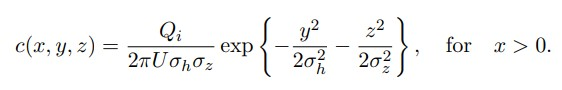
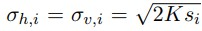

Wildfire Particulate Dispersion Model
A study of environmental fluid mechanics
Atmospheric dispersion modeling is the study of how air pollutants are spread through their surroundings by using mathematical simulations. This project focuses primarily on particulates generated and dispersed from wildfires which is especially concerning here in California. Wildfire emissions release aerosols which can be harmful to the atmosphere particularly with long-range transport of these wildfire plumes (hundreds of miles away from source). The MATLAB simulation created in this project utilizes the Gaussian plume/air dispersion equation (shown below) as the governing equation that models the wildfire.  Simplifications such as an equal horizontal and vertical plume spread were used. The variable s in the assumption is the distance between the point source and point of interest. 
Process & Results
The MATLAB code developed allows for an N amount of wildfires to be modeled each with its own plume. The inputs that could be plugged in by the user include the number of wildfires (N), the effective diffusion constant (K), and the wind velocity in the x-y plane (U). Aside from these, the simulation would randomize the variables and such as the point source (wildfire) locations and the rate at which the wildfire emits particulates (Q).
The code itself creates an x-y plane mesh with the meshgrid function. These values would be necessary to solve for the distance between the point source and point of interest. With all the math solved, MATLAB's contourf function would create a concentration map that would be outputted from running the code. Shown below are the contour maps resulting from N = 10 and different inputs of wind velocity.